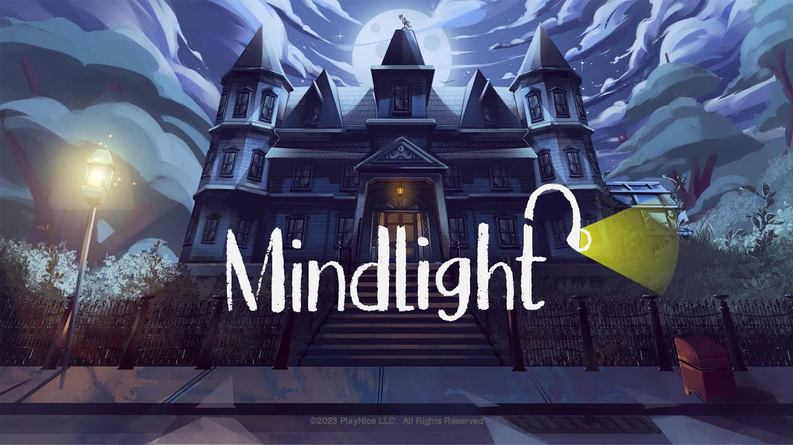
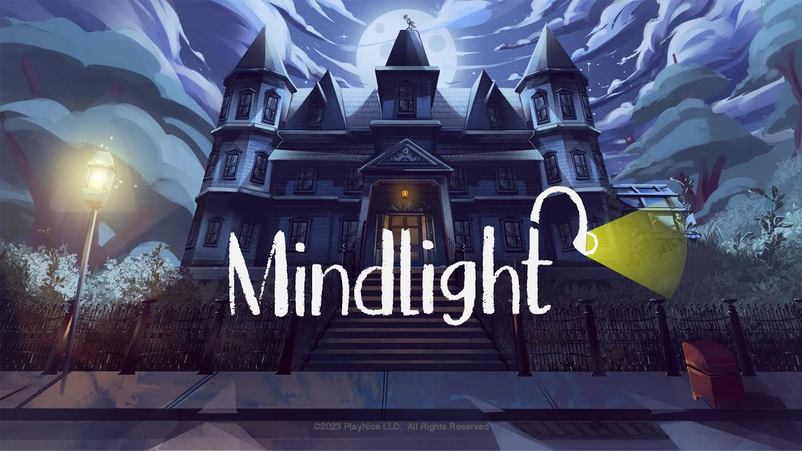
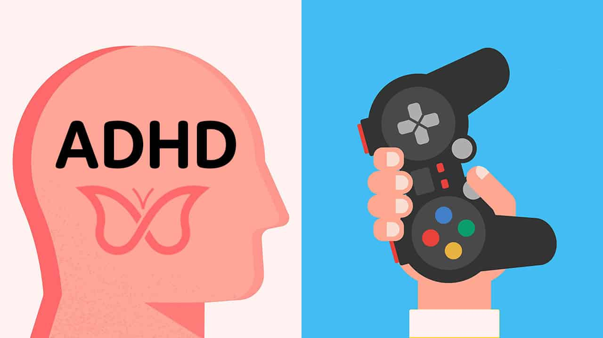

Psychological conditions and video games?
We could define psychological conditions as mental health problems that affect the normal and proper functioning of both the mind and emotions of people. There are a number of these conditions, such as :
- Depression
- Anxiety
- PTSD (Post-Traumatic Stress Disorder)
- ADHD (Attention Deficit Hyperactivity Disorder)
- OCD (Obsessive-Compulsive Disorder)
How they present themselves varies greatly from person to person depending on different factors to take into account in their daily lives. If something is known, is that in the treatment of illnesses, especially in the issue of medication and appointments, the cost can be exorbitant, especially if you do not have insurance that covers it.
This is where video games come in as a psychotherapeutic tool to consider when talking about psychological treatments. How their popularity has grown over the last few years is due to their easy accessibility to anyone who wishes to play a game. In addition, many available genres allow everyone to choose and enjoy the one they enjoy the most These aspects are what make video games something that can become familiar to anyone. Their long time on the market and growing popularity over the years allows them to connect with those who are willing to enjoy one. This is especially important for someone with a psychological condition, as it is something they are already familiar with and willing to use as part of their treatment. It is no secret that video games have long been criticized for allegedly provoking aggressive behavior and behavioral changes due to addiction, especially in the early years of this audiovisual medium. This is a perspective to consider, as it is a fact that excessive consumption of this product can cause problems that affect the daily lives of both children and adults. Although video game misuse is a problem, video games used as therapeutic tools have proven to be effective in treating psychological conditions.
Different applications of video games as treatments in psychological conditions.
Video games can be used in different ways to treat psychological ailments. One example is with both anxiety and depression, as video games provoke feelings of happiness or joy in patients, thanks to aspects such as acceptance, reward or distraction are effective in treating the symptoms of these emotional regulation problems. On the one hand with depression such as loneliness and isolation can be combated with the right video game. An example is Animal Crossing: New Horizons, which is a game where the main aspect is the interactivity with other users, has been shown to decrease psychological conditions, or even alleviate depressive symptoms by the connection it allows between players. On the other hand, anxiety can also be treated with solutions aimed at excessive worry, fear or disturbance in both social and work environments. Video games such as Rayman, MindLight, Max and the Magic Marker and Adventures aboard the S.S. GRIN have been shown to alleviate symptoms of anxiety disorder through their ability to minimize the emotional intensity and sense of engagement that these games provoke.
 

Video games can also be useful in the treatment of ADHD by serving as a tool in the diagnosis of this disability, or as a method for better adherence to the treatment in question. This is because the use of video games as a diagnostic tool can assess the presence of symptoms, memory and attitude changes. As well as in the adherence to treatment with the use of video games often has positive results, since video games are often seen as pleasurable and rewarding activities.
In the treatment of ASD, video games can also be very useful as an interactive medium that requires the communication and social skills of the person playing. People with ASD often find it more attractive to play video games, since in many of them social skills, as well as communication and pattern recognition, have the opportunity to improve in a well-defined environment. In addition, skills such as either communication, social interaction and behavioral flexibility can be improved with the use of video games in an appropriate manner.
According to Baldassarri in an article he wrote, called “Toward emotional interactive videogames for children with autism spectrum disorder” videogames can be very beneficial for children with autism spectrum disorder (ASD), as they allow for more interaction and data collection in a controlled environment. The article presented a game that combines emotional training with a 3D maze designed to assess emotional responses. Although the design of the game was outstanding, more importantly, it was able to capture and hold the attention of patients through the sense of accomplishment in completing tasks. The authors conclude that these digital tools may be useful, although further studies with more meaningful and context-rich challenges are needed.
Because psychological therapy covers a wide variety of cases, tools are required that allow the personalization of treatments. Francesco Bocci presents Video Game Therapy (VGT) in his article Putting the Gaming Experience at the Center of the Therapy-The Video Game Therapy® Approach” as a therapeutic technique that places the video game at the center of the psychological process. VGT is divided into two parts: flow, which seeks to keep the patient immersed by stimulating his or her visual and spatial memory, and relational setting, which strengthens the relationship between patient and therapist to facilitate emotional analysis. Through the game and the avatar, emotions, thoughts and behaviors can be explored. The therapist can observe or participate in the game, allowing for meaningful conversations. The choice of video game should align with therapeutic goals, whether to encourage introspection or social interaction.
Dangers of video games in their use as treatment.
Although video games can have therapeutic benefits, they can also have negative consequences if not used carefully, especially the risk of addiction. People with psychological disorders are more prone to develop addiction due to the visual and emotional stimulation offered by video games. In the case of ADHD, video games can worsen symptoms if there is no control, as patients are more sensitive to external stimuli. Although some games can improve impulsivity, they do not always help with attention. As for ASD, there is little research on this, and there are risks such as dependence on repetitive behaviors or difficulty getting out of routine. In addition, the danger of aspects such as addiction to loot boxes and gambling can develop, as these mechanics can encourage pathological gambling behaviors in vulnerable people.
Final conclusions.
With proper observation, video games have proven to be useful as therapeutic tools. Thanks to various aspects of them such as their price which is more affordable than medications on average as well as their wide variety of genres, video games can be used by a large number of people for their benefit. The application of video games as treatments for psychology could even be further expanded if they were implemented in different ways to reach more groups of people. Governments and regulatory boards could greatly expand the reach of video game therapy by supporting their use and encouraging or requiring insurers to cover this treatment. At the end of the day they are a tool that can improve the condition of those who are willing to use them not as a training tool, but as a more interactive way to treat these conditions. With proper monitoring, the way video games are used can continue to change, so that in the future they will become more effective and accessible tools that improve the quality of life for many patients in need of mental health care.